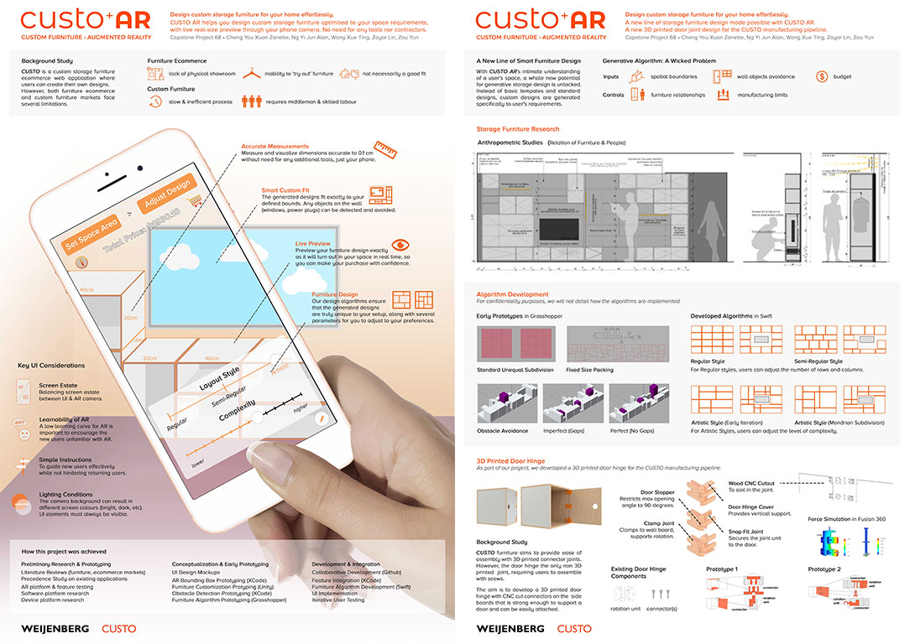

Custo AR
Create a truly custom shelving design that fits your desired space perfectly with Augmented Reality & AI-driven designs.
Custo is a custo shelving start-up that has an ecommerce for customers to design their own custom shelvings. With the ecommerce, there comes everal limitations, such as inability to visualize the design in the actual desired space, trouble in manually doing measurements and inputting them into the website, and adjusting the design of the shelving without actually understanding the scale.
Augmented Reality for measurements & visualization
With AR, we address multiple problems - users can directly 'draw' and measure their desired location for the shelves through their phone camera, and the generated shelving can not only be seen through the camera like it is actually there, but it fits exactly into the specified area drawn by the user.
AI algorithm driven shelving arrangement designs
With the shelving dimensions determined by the user, we created several design algorithms to generate different custom designs that might fit the user better. The user can toggle between the different design styles, each with its own customizable parameters.
Custo AR was part of the Capstone industry attachment FYP in SUTD. The company, Custo Weijenberg, expressed interest in further development and brought us onboard to continue development.